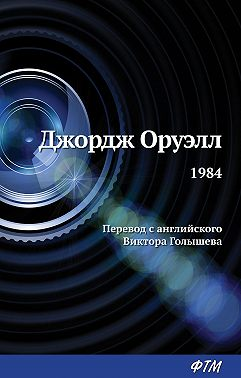

Главная
Мастер и Маргарита
Маленький принц
=1984=
Бойцовский клуб
Преступление и наказание
- 
Джордж Оруэлл
275 печатных страниц 16+
О книге
Фантастическая антиутопия Оруэлла – это мир тотального контроля и страха, где люди живут ради войны, ради того, чтобы скрыть правду и воспитать настоящих патриотов. В жестоком тоталитарном государстве люди лишены гражданских прав и собственного мнения. Культ Большого Брата подразумевает жесткую социальную иерархию, где даже проявление любви считается мыслепреступлением. Уинстон Смит понимает, что он пешка в этой истории, и тем не менее пытается что-то изменить. «1984» – это аллюзия на страны, в которых господствовал тоталитаризм. В ХХ веке книга была запрещена в социалистических государствах и вызвала волну возмущения по всему миру. Сейчас же «1984» считается ключевым произведением в жанре антиутопии.
Дата написания: 1 января 1949
Жанры
Историческая фантастика, Социальная фантастика, Зарубежная фантастика
Темы
Альтернативная история, философская фантастика, психологичсекая фантастика, антиутопия, премия "Великое кольцо"
Ссылка на книгу
https://mir-knig.com/read_369672-1
На главную